Personagens Principais - Duel Monsters
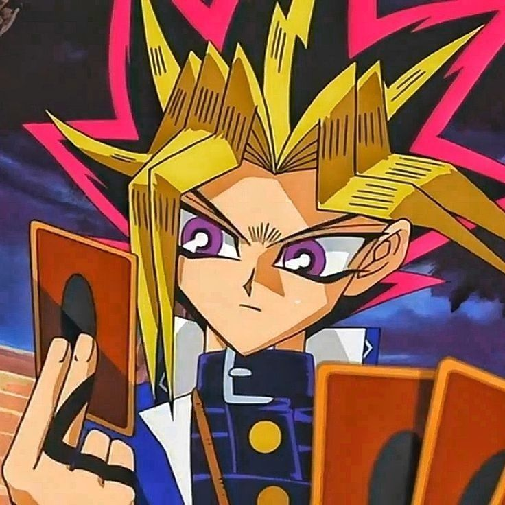
| Descrição: | Monstro Ás: |
| Yugi Muto é o protagonista, ganhou o Enigma do Milênio em peças por seu avô, Solomon Muto. Quando ele resolve o enigma, seu corpo torna-se hospedeiro de um Faraó Egípcio de 5000 anos. Por causa da freqüente interação entre os dois personagens, Yugi refere-se ao Faraó como "Outro Eu". Yami Yugi. Depois que Yugi e seus amigos descobrem que Yugi é o espírito do Faraó Atemu, eles começam a referir-se a ele como "Faraó". | 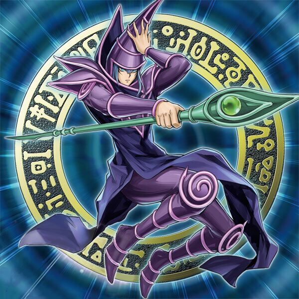 Mago Negro |
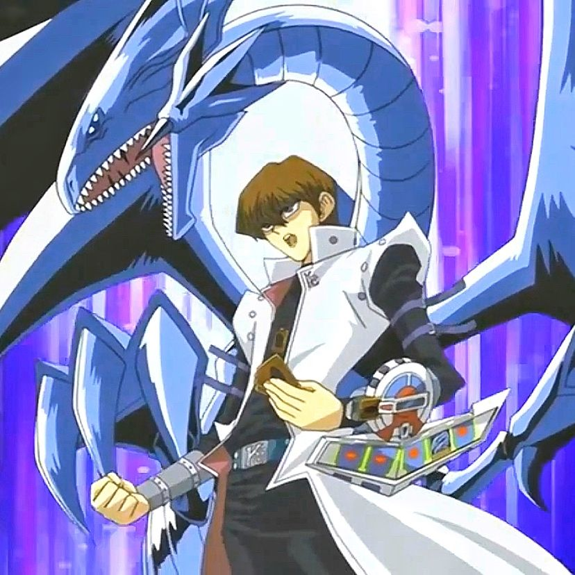
| Descrição: | Monstro Ás: |
| Seto é dono da sua própria empresa multinacional e acionista desta chamada Corporação Kaiba. Arrogante, egocêntrico e um tanto egoísta, Kaiba pretende se tornar o melhor duelista do mundo, mas para isso ele tem que enfrentar um melhor que ele (YU-GI-OH!) que além de lhe tirar esse título, para sua humilhação, derota-o frequentemente. Sua principal carta de seu baralho é o Dragão Branco de Olhos Azuis (3000/2500) Uma das principais características de Kaiba é absolutamente desacreditar no coração das cartas e nos poderes mágicos geralmente usados na série; ele se convence de que são apenas truques e ilusões. Isso é muito mais exagerado na versão americana do anime. Ele também tem um certo desprezo pelos amigos de Yugi; refere-se a eles como dweeb patrol e geek squad. | 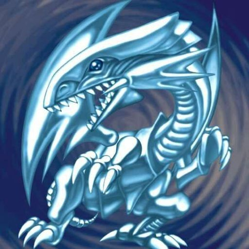 Dragão Branco de Olhos Azuis |
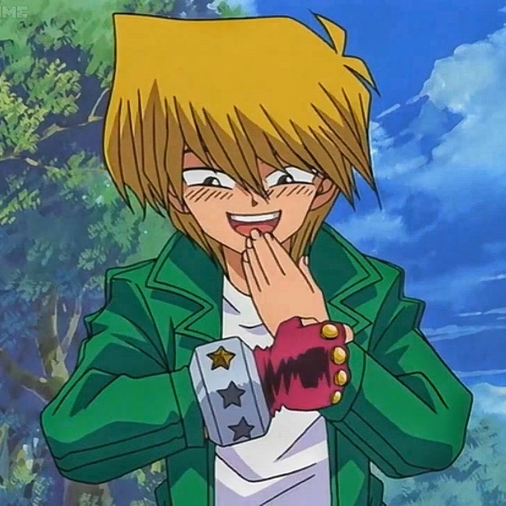
| Descrição: | Monstro Ás: |
| Joey começou como um valentão, mas tornando-se amigo de Yugi Muto isso muda. Embora ocasionalmente retratado como alívio cômico, ele é essencial para a trama e tema geral da série. Ele é um duelista entusiasta, que afirma que o duelo é sobre a luta para ajudar as pessoas que você ama. Kazuki Takahashi considera Seto Kaiba e Yami Yugi fracos em comparação a Joey. As primeiras sílabas de forma Yugi e Jonouchi de nomes yujo, que é japonês para a amizade, simbolizando o elo entre os dois personagens. A carta "Amizade Yu-Jo" é baseado nesta conexão. | 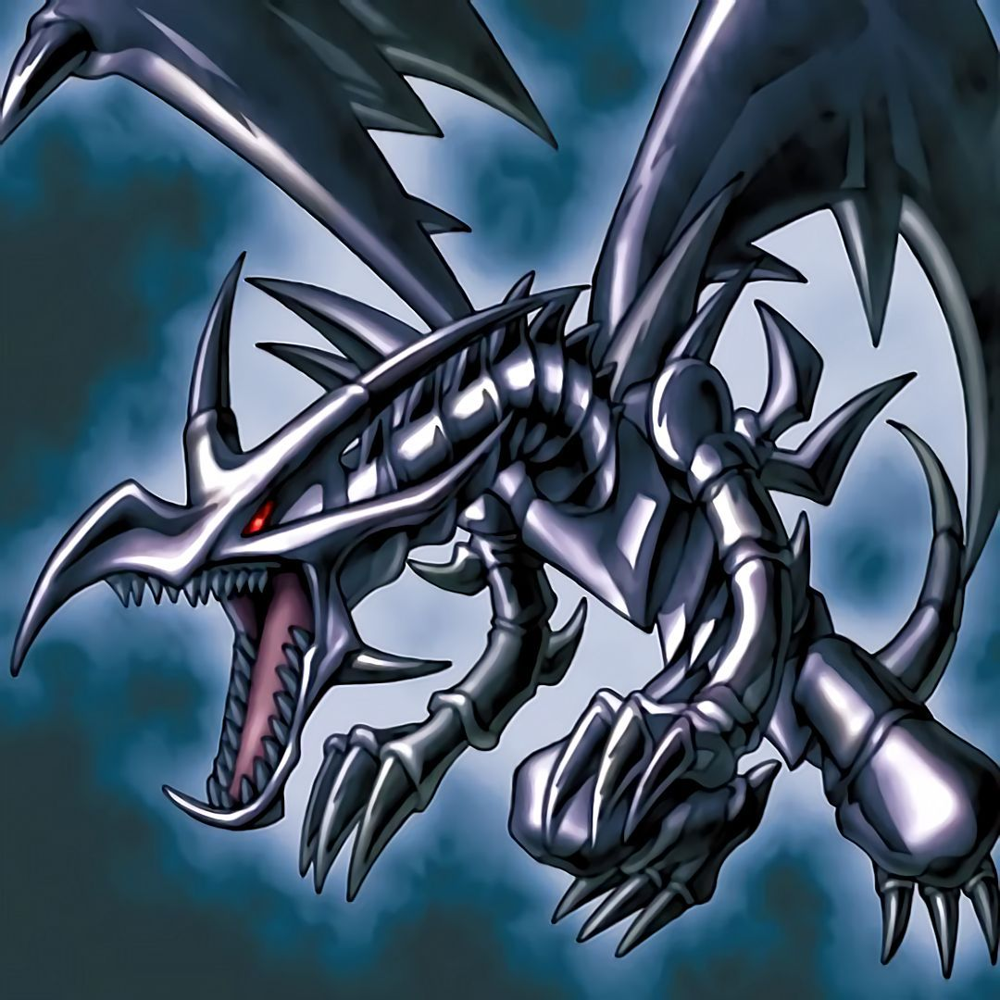 Dragão Negro de Olhos Vermelhos |
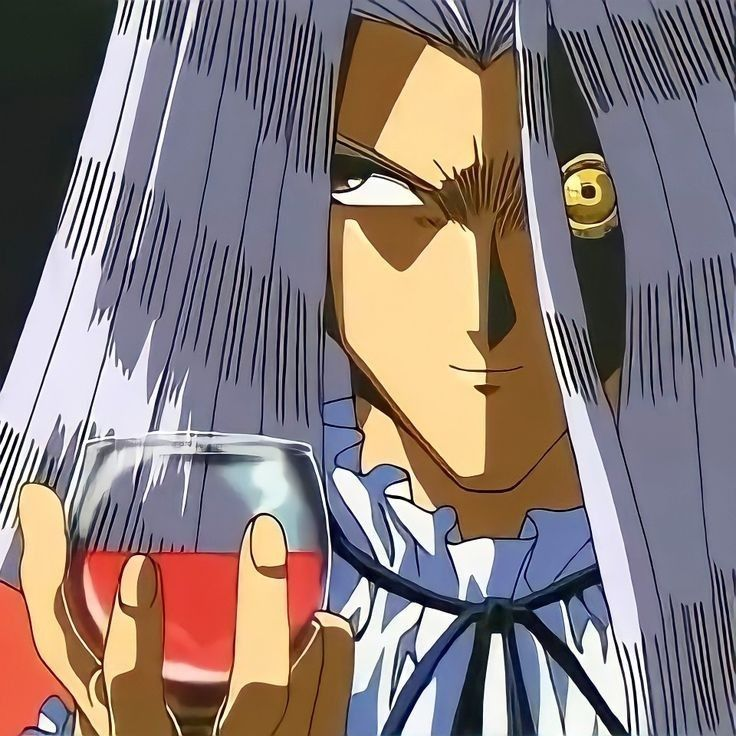
| Descrição: | Monstro Ás: |
| Pegasus é retratado como um homem bem-educado, mas excessivamente dramático, obcecado por desenhos animados, escondendo a aparência de um empresário e jogador implacável, mas um homem de palavra. Pegasus tem o hábito de chamar Yugi de "Yugi-boy" e Kaiba de "Kaiba-boy". Pegasus se interessa por desenhos animados, especialmente Funny Bunny , que ele assistia todas as manhãs de sábado enquanto crescia na América. Os desenhos animados são a inspiração para muitas de suas cartas, como os monstros toon. Pegasus a princípio parece um trapaceiro com sede de coletar almas e realizar suas ambições. Essa impressão muda quando seu verdadeiro motivo é revelado. Pegasus não é apenas um excelente empresário, suas motivações para agir como o acima foram a ressurreição de sua falecida amante Cecelia . Como ele precisava da Solid Vision da KaibaCorp e, portanto, precisava da KaibaCorp, o acordo com os Big Five é que ele receberia o controle se derrotasse Yugi, para restaurar a reputação da Kaiba Corp quando Yugi venceu Kaiba. A partir disso, sua trapaça para derrotar Yugi e sequestrar Solomon, Mokuba e Seto Kaiba torna-se um tanto compreensível. Além disso, o próprio Pegasus honra sua promessa a Yugi Muto, alegando ser "obrigado pelo dever" e um "homem de palavra", liberando as almas de Solomon Muto, Mokuba Kaiba antes de ser derrotado em um Shadow Game por Yami Bakura. | 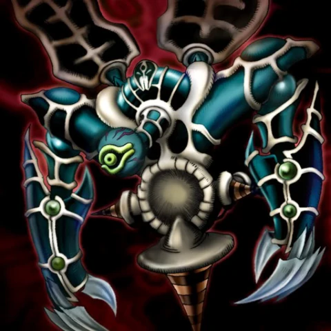 Renunciado |
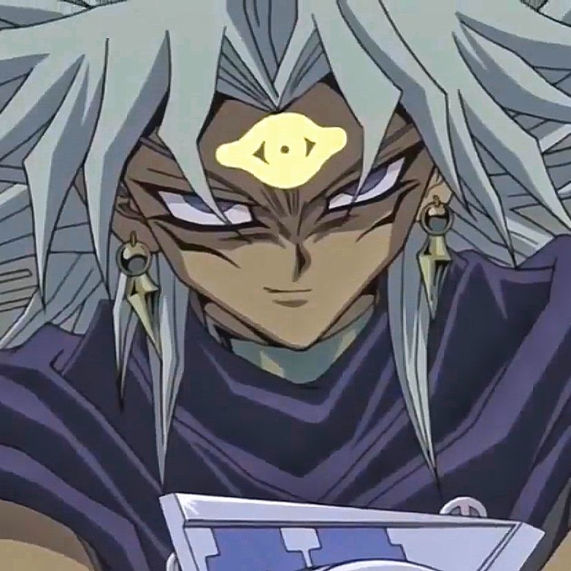
| Descrição: | Monstro Ás: |
| Marik Ishtar é o líder e fundador dos Caçadores Raros, irmão mais novo de Ishizu Ishtar, o irmão mais novo adotivo de Odion e herdeiro dos Guardiões da Tumba. Marik foi o principal antagonista do arco Battle City, até a derrota de Odion, quando a personalidade dividida de Marik, Yami Marik , assumiu o controle de seu corpo e o substituiu como o principal antagonista. Marik finalmente conseguiu recuperar o controle de seu corpo e destruir seu outro eu de uma vez por todas, redimindo-se no processo. | 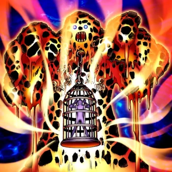 Lava Golem |
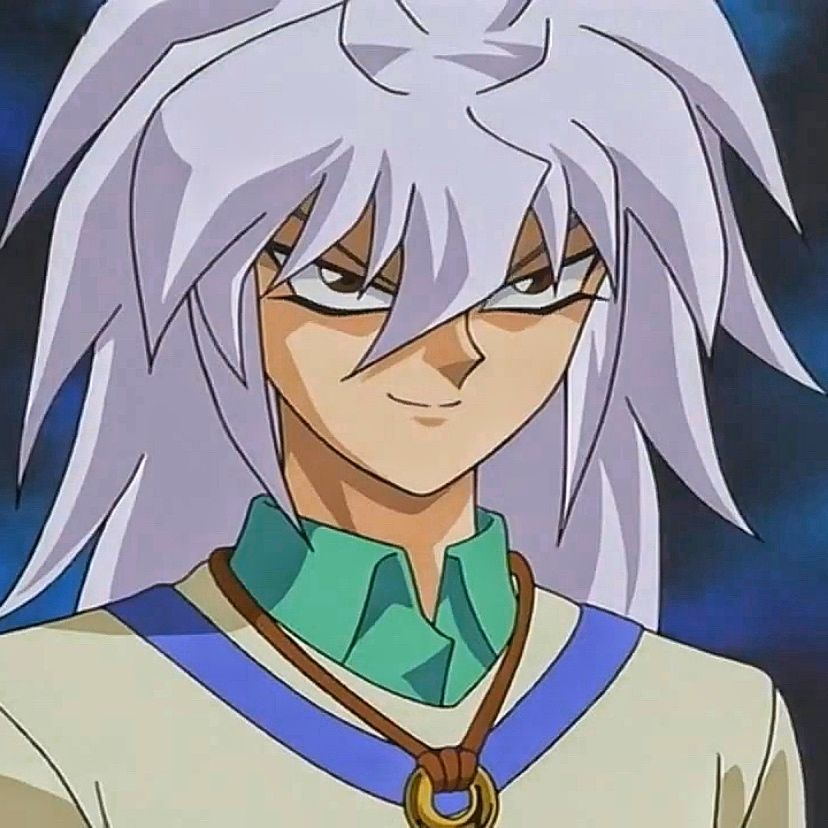
| Descrição: | Monstro Ás: |
| Bakura é um amigo de Yugi Muto. Ele é o possuidor do Anel do Milênio, uma das sete Relíquias do Milênio. Bakura recebeu o anel de seu pai, que o conseguiu em uma feira egípcia. O Sr. Bakura ouviu que o anel tinha conexões com Duelo de Monstros, um jogo que seu filho adorava. Porém, junto com o anel, havia um espírito maligno, mais tarde conhecido como Yami Bakura (Yami Bakura ou Espírito do Anel na versão português). | 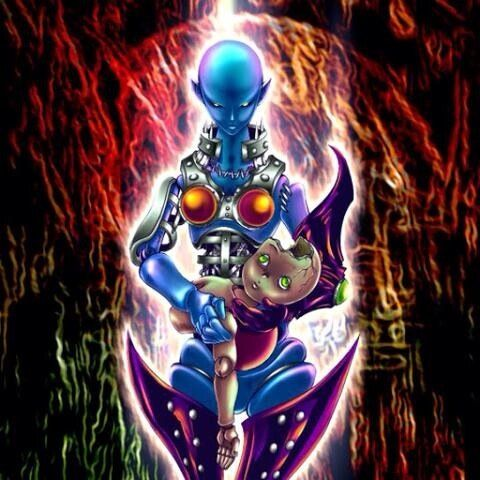 Dark Necrofear |